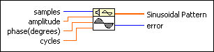
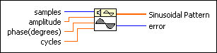
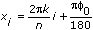

Sine Pattern VI
Owning Palette: Signal Generation VIs
Requires: Full Development System
Generates an array containing a sinusoidal pattern.

 Add to the block diagram Add to the block diagram |
 Find on the palette Find on the palette |
Owning Palette: Signal Generation VIs
Requires: Full Development System
Generates an array containing a sinusoidal pattern.

| Add to the block diagram |
Find on the palette |
 |
samples is the number of samples of the Sinusoidal Pattern. samples must be greater than or equal to 0. The default is 128. If samples is less than zero, the VI sets Sinusoidal Pattern to an empty array and returns an error. | ||
 |
amplitude is the amplitude of Sinusoidal Pattern. The default is 1.0. | ||
|
phase is the phase in of the sine wave without reset and must be in degrees. The default is 0.0.
|
||
|
cycles is the number of complete periods of the Sinusoidal Pattern. The default value is 1.0.
|
||
 |
Sinusoidal Pattern returns an array containing a sinusoidal pattern of samples. The largest Sinusoidal Pattern the VI can generate depends on the amount of memory in your system and is theoretically limited to 2,147,483,647 (231 – 1) elements. | ||
 |
error returns any error or warning from the VI. You can wire error to the Error Cluster From Error Code VI to convert the error code or warning into an error cluster. |
If the sequence Y represents Sinusoidal Pattern, the Sine Pattern VI generates the pattern according to the following equations.
yi = asin(xi)

for i = 0, 1, 2, …, n – 1,
where a is the amplitude, k is the number of cycles in the pattern, 0 is the initial phase in degrees, and n is the number of samples